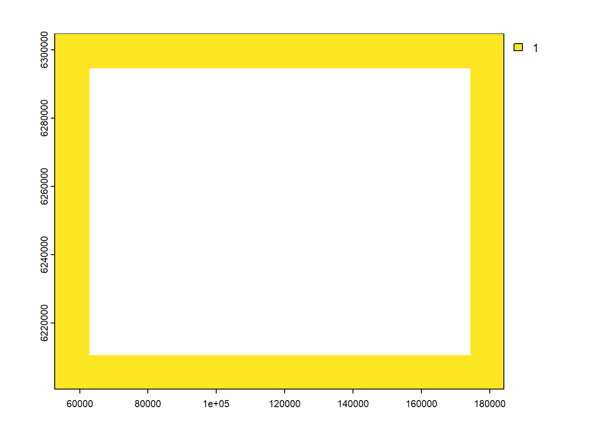
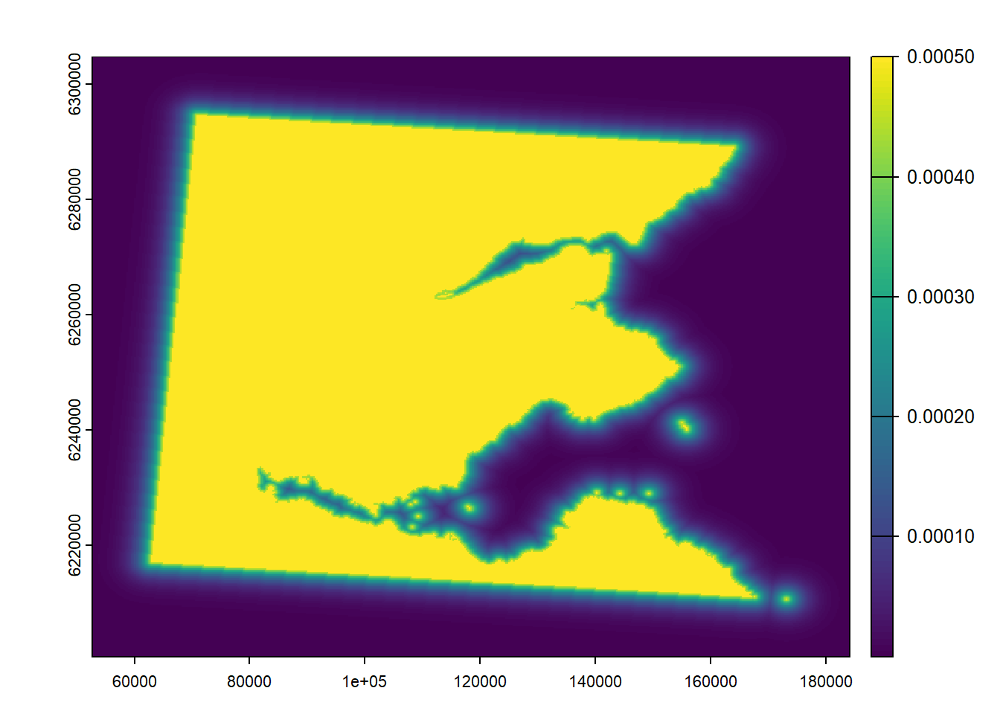
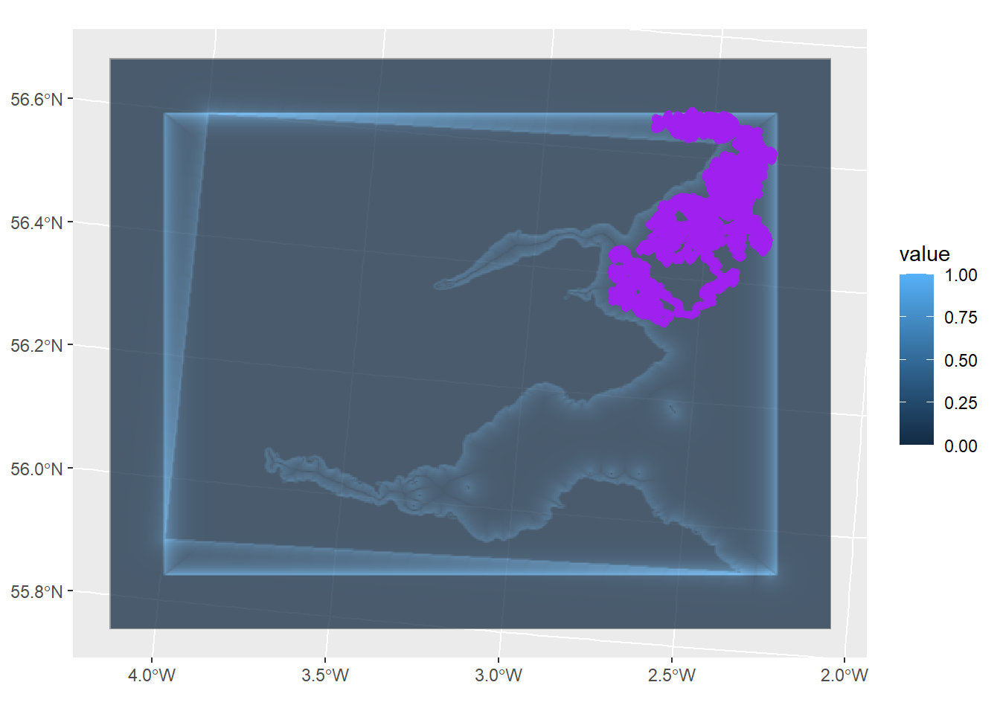

# basic movement function
# takes current location [x, y] + realised parameters for turning and stepping
# returns new location [x, y]
# NB: time/units/projection
move_agent <- function(current_pos, direct_m, direct_v, step_shape, step_scale){
new_direction <- rwrpnorm(1, mu = direct_m, sd = direct_v)
new_step <- rgamma(1, shape = step_shape, scale = step_scale)
add_x <- new_step*cos(new_direction)
add_y <- new_step*sin(new_direction)
out_pos <- current_pos + c(add_x, add_y)
st_crs(out_pos) <- st_crs(current_pos)
out_pos
}roamR movement modelling
Overview
roamR requires a movement engine that is stochastic, incorporates states, and is responsive to its environment and agent state. Parameterisation of this will be informed by data, possibly through the fitting of formal models. A very good comprehensive approach to this, data permitting, would be the fitting of Hidden Markov Models to tracking data and associated environmental measures, as provided through the moveHMM or momentuHMM R packages. roamR’s movement simulation is built with this in mind, whilst allowing the general case of little formal estimation and the addtional layers required for the DisNBS project (OWF interations and energetics etc) which go beyond state-and-movement modelling/simulation.
There are 4 broad elements to the movement engine:
- Initialisation
- Stochastic movement, which permits directed/correlated movement steps, which are consistent with biology
- Differing behavioural states, which are reflected in different movement characteristics, and transition in a biologically consistent way
- Interactions of the movement and/or states, with the environment and aspects of the agent’s condition. For example, changes in the state transition probabilities, or the movement parameters within states, or the distribution of states
NB state here will be generally used for behavioural state.
Initialisation
Location, initial state, internal condition and other agent-level values - can be stochastic from agent class.
Stochastic movement
A simple 2-step approach is taken in keeping with models fitted in HMM packages - iterative selection of direction and step length. Stochastic direction is defined and generated from circular distributions (here defaulting to the von-Mises), which permits directionality from it’s mean value and a level of correlation/directedness from its variance/precision parameterisation. Step-length need only be non-negative (here the default gamma), which reflects the biological reality of the agent.
Temporal needs to be integral to the formulation - self-evident that movements on small time-scales will tend towards very low directional variance/high correlation and small step-length.
Behavioural states
Animals/agents will have different behavioural states, which are reflected in different movement characteristics - for example resting, where movement effectively ceases. The simulation permits differing movement parameters for different states, and control of transition between states, where state transitions are controlled via transition matrices.
Interactions
Movements are responsive to the environment and agent condition. Key examples of this are interations with:
- Landscape features - avoidance of land
- Structures - attraction, repulsion or barriers from OWF
- Prey or conspecific density
- Agent energetics - the daily composition of states being dependent on agent’s energy requirements
- Time of day - reflected in diurnal/nocturnal behaviour
Initialisation
BC
Movement engine
Basic movers
- Initial position
- Input parameters for direction (mean and variance) and step (gamma shape parameters, based on mean and variance inputs)
- Select wrapped-Normal direction and gamma step
- Update position and repeat
NB - microbenchmark indicates wrapped normal is 20x faster than von mises, and cauchy can be periodically much slower than the wrapped normal. Gamma is not so fast as normal (obvs), but not so different to other non-negative dist like log-norm.
CircStats circular functions operate on the 0 to 2domain. Will stick to the standard definition of direction WRT trig, such that 0 is navigationally east, pi/2 is north, pi is west etc
An additional basic helper function, for determining the direction of travel between two points (standard mathematical radial system).
# Calculate the direction between two points (first and finish)
# Uses the standard radial angle system throughout - 0 being horizontal right, counter clockwise angles in radians
calc_direction <- function(start, finish){
diff <- unlist(finish) - unlist(start) # much faster if reduced to vectors cf spatial
atan2(diff[2], diff[1])
}quick_extract_pt <- function(in_rast, in_point){
loc <- terra::cellFromXY(in_rast, matrix(unlist(in_point), ncol = 2))
terra::extract(in_rast, loc)
}Movement with reference to environment
coast_poly <- readRDS("data/coastline_testcases.rds") %>%
filter(region == "fife")
coast_vect <- coast_poly %>%
st_transform(crs = crs_utm31) %>%
vect() # move terra class
plot(coast_vect)Construct an AOC, here based on the terrain in hand (add 10km around)
bound_poly <- (st_bbox(coast_vect)+c(0, 0, 1.5, 0))%>%
st_as_sfc() %>%
vect()
buff_poly <- buffer(bound_poly, width = 10000)
bound_rast <- rast(buff_poly, ncols = 500, nrows = 500, vals = 1)
buffer_region <- mask(bound_rast, bound_poly, inverse = T)
plot(buffer_region)
dist_to_boundary <- distance(buffer_region)
plot(dist_to_boundary)Distance to coast layer
coast_raster <- rasterize(coast_vect, bound_rast)
dist_to_coast <- distance(coast_raster)
plot(dist_to_coast)
bound_decay <- dist_to_boundary
values(bound_decay) <- dexp(values(bound_decay), 1/2000)
coast_decay <- dist_to_coast
values(coast_decay) <- dexp(values(coast_decay), 1/2000)
plot(coast_decay)
vector fields
Take slope and aspect values, store in stars structures Make responsive to vector field
bound_repel <- terrain(bound_decay, v = c('aspect', 'slope'), unit = "radians");
values(bound_repel$aspect) <- -(values(bound_repel$aspect) - 0.5*pi) # conversion from clockwise bearing from north
values(bound_repel$slope) <- values(bound_repel$slope)/max(values(bound_repel$slope), na.rm = T)
coast_repel <- terrain(coast_decay, v = c('aspect', 'slope'), unit = "radians");
values(coast_repel$aspect) <- -(values(coast_repel$aspect) - 0.5*pi) # conversion from clockwise bearing from north
values(coast_repel$slope) <- values(coast_repel$slope)/max(values(coast_repel$slope), na.rm = T)
plot(coast_repel)Need to have the magnitude of the repulsion play a part, currently it is solely direction. Will incorporate slope as well as aspect. First add layer for slope as well.
system.time({
set.seed(7657)
n_steps <- 10000 # 3 months, 10 min steps = 12960
repel_array <- c(bound_repel, coast_repel)
start_pos <- st_sfc(st_point(c(15e4, 626e4)), crs = crs_utm31)
init_dir <- 0
var_dir <- 1
# mean_step <- 240 # 4m/s, 1 minute
in_shape <- 240/4
in_scale <- 4
current_pos <- start_pos
travel_dir <- init_dir
step_hist <- matrix(nrow = n_steps+1, ncol = 2)
step_hist[1, ] <- unlist(start_pos)
for(i in 2:(n_steps+1)){
next_pos <- move_agent(current_pos, travel_dir, var_dir, in_shape, in_scale)
current_dir <- calc_direction(current_pos, next_pos)
dir_modifiers <- quick_extract_pt(repel_array, next_pos)
pars <- as.numeric(c(1, dir_modifiers[c(2,4)]))
dirs <- as.numeric(c(current_dir, dir_modifiers[c(1, 3)]))
y_tan <- sin(dirs) %*% pars
x_tan <- cos(dirs) %*% pars
travel_dir <- atan2(y_tan, x_tan)
current_pos <- next_pos
step_hist[i,] <- unlist(next_pos)
}
}) user system elapsed
3.86 0.03 7.16 step_hist <- step_hist %>%
as.data.frame() %>%
sf::st_as_sf(coords = c(1, 2)) %>%
st_set_crs(crs_utm31)ggplot() +
tidyterra::geom_spatraster(data = coast_repel$slope, alpha = 0.5) +
tidyterra::geom_spatraster(data = bound_repel$slope, alpha = 0.5) +
geom_sf(data = step_hist, col = "purple", alpha = 0.5)
States
- Transitions between states
- Transition matrices
- Marginal state probabilities (and initial state)
- State-specific movement parameters
Transition matrices are permitted to be dynamic with respect to environment and agent condition where needed.